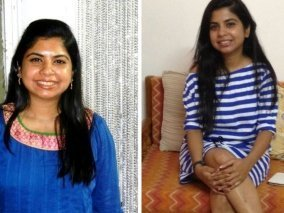

-15 kg 
BERAT BERLEBIH HILANG! SAYA TERKEJUT!
PERIODE PENGGUNAAN: 3 BULAN
SEBELUM: 74 kg SESUDAH: 59 kg
Anditya M, 29:
Selama hidup saya mungkin sudah mencoba ratusan diet dan tidak ada yang berhasil. Berat saya selalu stabil -74 kg. Kadang saya merasa kalau minum air saja berat badan saya naik! Untungnya, rekan saya merekomendasikan untuk mencoba obat tetes Eco Slim. Saya kagum dengan hasilnya! Hanya perlu waktu 3 minggu untuk turun 10 kg dan 5 kg sisanya turun tidak lama setelahnya. Saya tidak henti-hentinya mengagumi tubuh baru saya! Tambahan lagi - beratnya "tidak kembali lagi".
-26 kg
PENURUNAN BERAT LUAR BIASA... 26 kg!
PERIODE PENGGUNAAN: 6 BULAN
SEBELUM 78 kg SESUDAH 52 kg
Sinta H, 31
Saya bahkan tidak sadar bagaimana berat saya bisa sampai 78 kg. Saya putuskan untuk mengubahnya. Sayangnya, diet yang saya lakukan mengecewakan. Semuanya tidak berguna! Lalu rekan saya memberitahu saya tentang obat tetes Eco Slim. Sekarang saya merekomendasikannya kepada siapa saja karena saya telah merasakan keampuhannya. Akhirnya berat badan saya turun! Berat saya turun 10 kg dalam bulan pertama dan perlahan-lahan sisanya terus turun. Kini kesehatan saya jauh membaik dan saya menjadi sangat bugar dibanding sebelumnya!
-21 kg 
SIAPA LAGI YANG BERNIAT TURUN 21 kg?
PERIODE PENGGUNAAN: 2 BULAN
SEBELUM: 64 kg SESUDAH: 43 kg
AMEL A, 20:
Saya ingin memiliki bentuk tubuh impian dan sudah mencoba segala macam metode modern: diet, pil, teh, krim, dan mesin olahraga. Saya berhasil menurunkan beberapa kg berat namun kemudian berat saya naik lagi dengan cepat. Obat tetes Eco Slim membuat saya kagum dengan keampuhannya! Hanya dalam beberapa bulan meminum obat tetes ini penampilan saya meningkat dengan signifikan: kulit muka saya menjadi kencang, pinggang semakin ramping, dan semua selulit hilang! Saya lalu mencoba minum obat tetes ini tanpa diet, tenyata tetap berhasil!